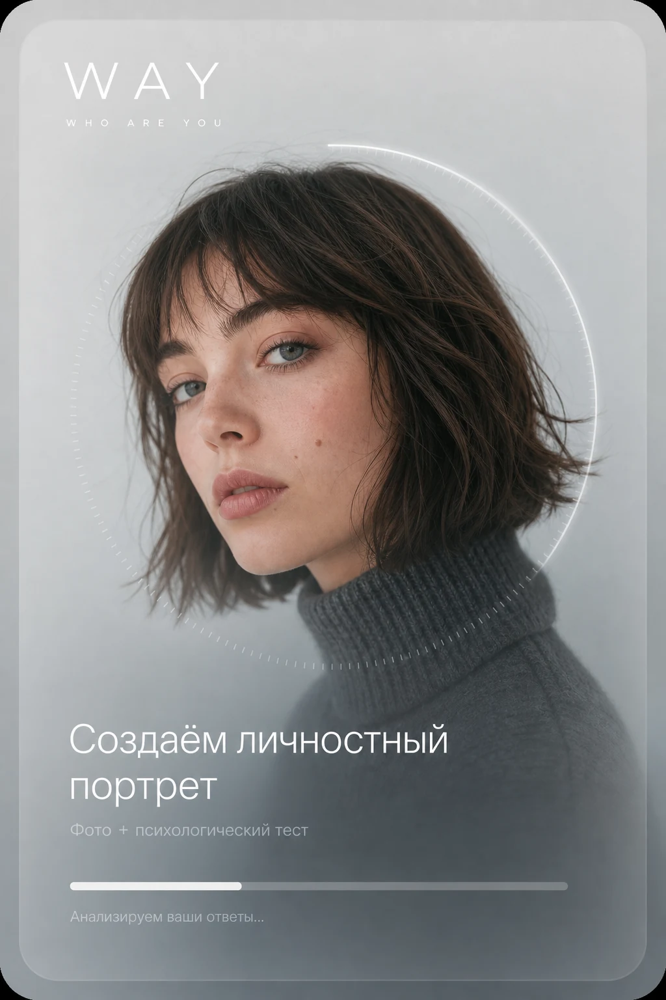
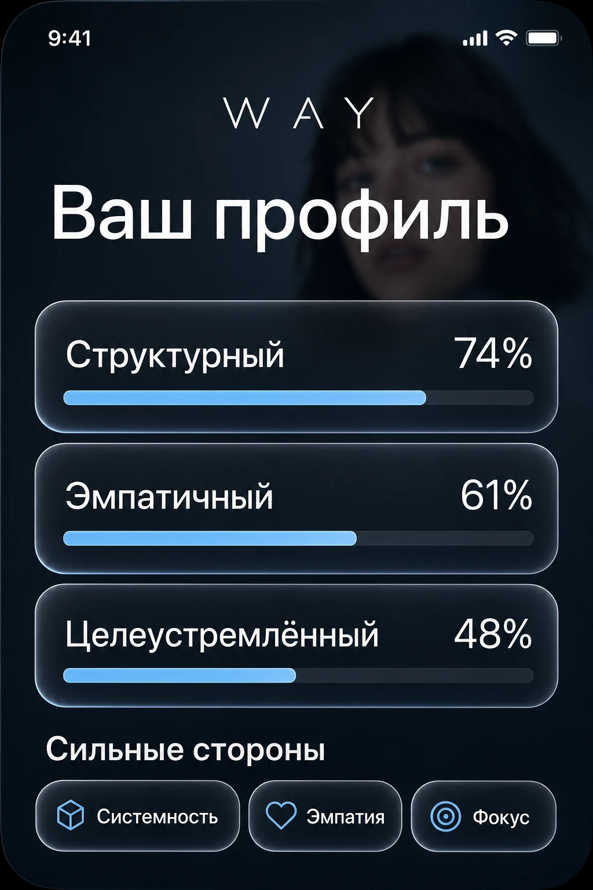
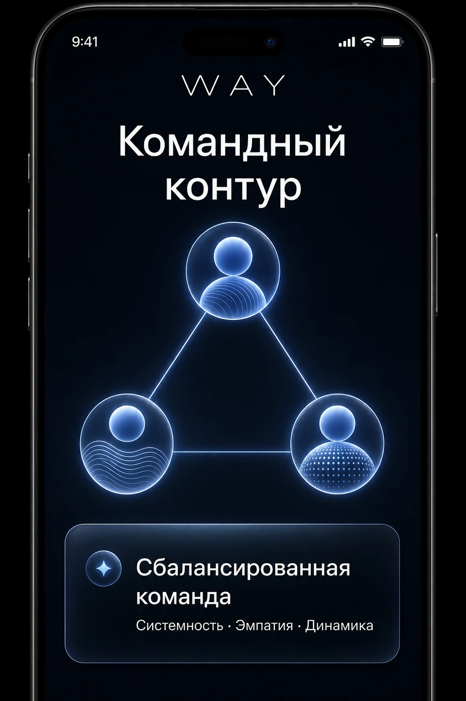

Низкая вовлечённость
Рутинные анкеты не помогают кандидату увидеть ценность в первых минутах.
People intelligence platform
WAY превращает знакомство с человеком в персональный, понятный и бережный сценарий: от первого касания до командного инсайта.
Добровольное участие · прозрачный пользовательский сценарий · результат не является решением о найме

Контекст HR-tech
Кандидаты заполняют одинаковые формы. Рекрутеры вручную собирают первые сигналы. Платформе трудно отличить реального, вовлечённого человека от случайного отклика.
Рутинные анкеты не помогают кандидату увидеть ценность в первых минутах.
До разговора рекрутеру не хватает мягкого, человеческого представления о кандидате.
Даже сильные специалисты не всегда образуют сильную рабочую связку.
WAY для платформы
Не коробка, а продуктовая основа, которую команда WAY адаптирует под конкретный сценарий партнёра.
Пользователь добровольно проходит короткий визуальный сценарий. Это добавляет доверия к профилю и снижает долю безличных действий в воронке.
Фото становится лёгкой точкой входа. Психологические тесты и экспертиза авторов усиливают результат, формируя понятный архетип и язык для диалога.
Кандидат получает ценность сразу. Рекрутёр получает дополнительный контекст для коммуникации, но не автоматический вердикт.
На добровольной основе доступен обзор баланса ролей, сильных связей и потенциальных точек роста внутри команды.
Продуктовый сценарий
Готовый мобильный опыт, который можно встроить в собственный пользовательский путь.


Возможности интеграции
Добровольный персональный блок, который делает профиль живее и помогает начать содержательный диалог.
Новый полезный повод вернуться в сервис с понятной ценностью для самого пользователя.
Инструмент для действующих команд: совместимость, роли, коммуникация и персональные рекомендации.
Готовая серверная часть, приложения и отчёты. Интерфейс и логику можно адаптировать под экосистему партнёра.
План развития
Выбираем одну точку в пользовательской воронке, ставим метрики вовлечения и тестируем формат.
Добавляем валидированные опросники и экспертизу авторов, чтобы усилить персональный результат.
Персонализируем отчёты, диалоговые рекомендации и сценарии командного развития под нужды партнёра.
Next step
Покажем продукт, обсудим сценарий и вместе определим измеримый результат первого запуска.
Обсудить пилот →